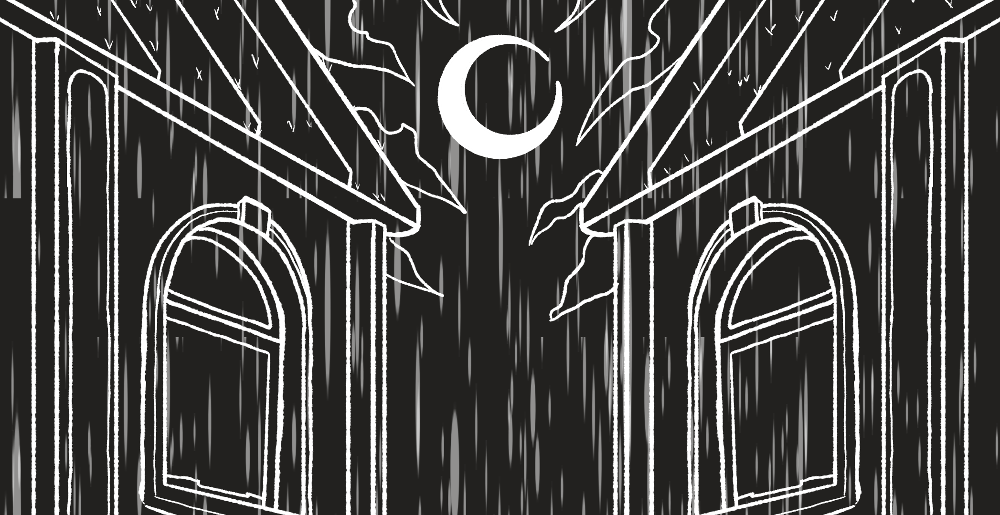
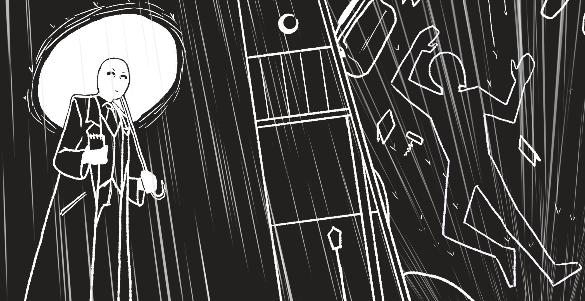
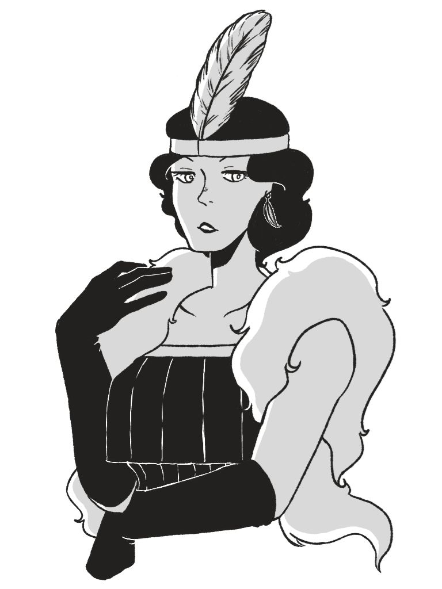
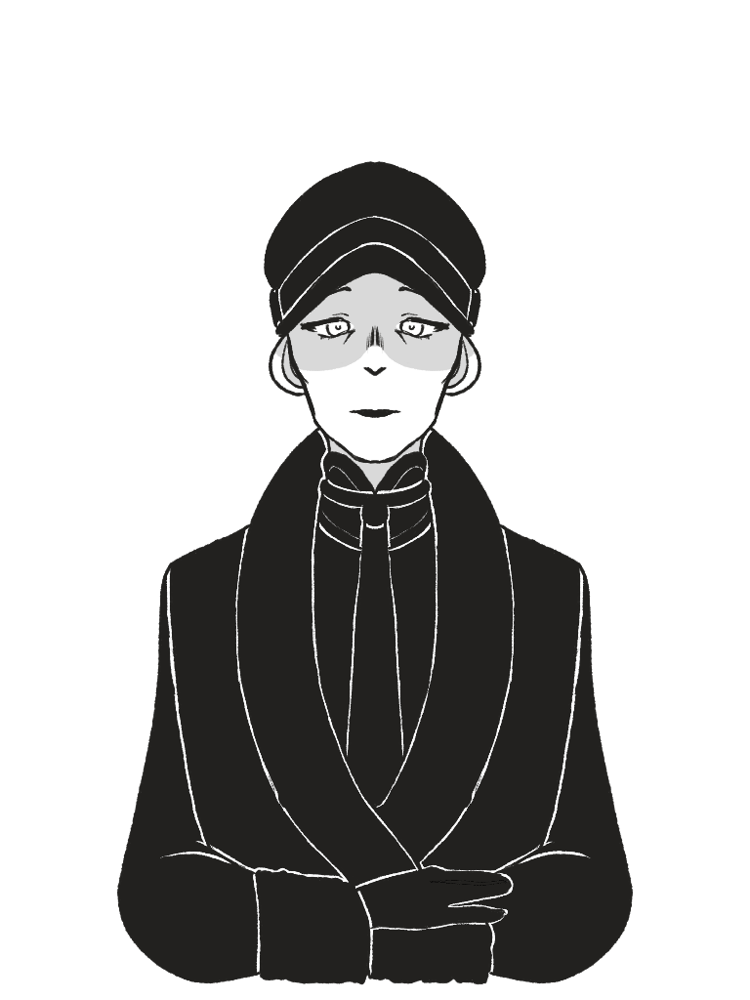
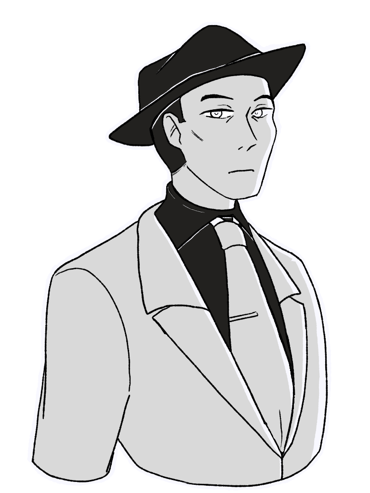
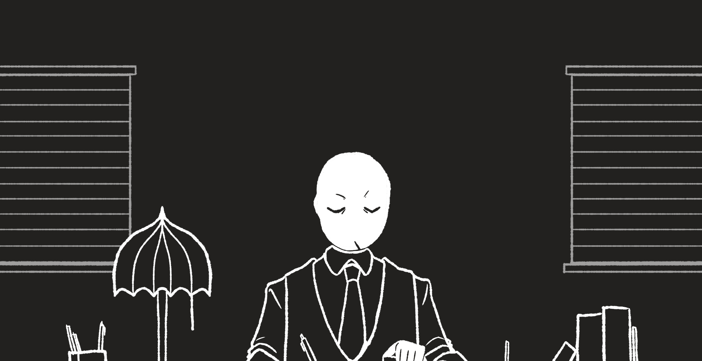
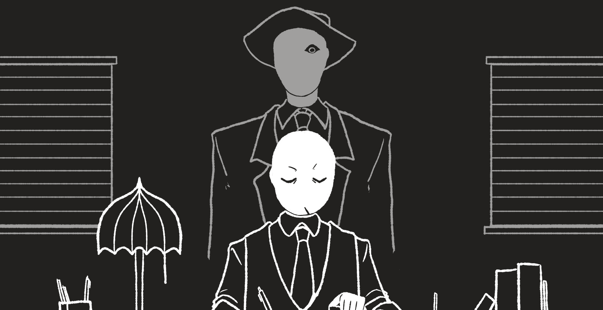

Prologue







Dark, Stormy Night.
It was a dark and stormy night.
You know, the usual night in this bleak city.
Got a call from the chief. A new case.
Time to investigate the murder.
Continue
Lady Medina
Miss Patterson
Mr. Cal Fritz
A Murder Mystery game made by Nicaia Divina and Sean Kyle Undag.
Web Design and Scripting (JS/JQUERY) Final Project.